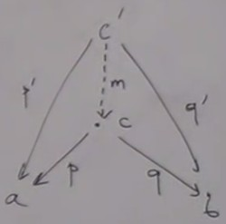
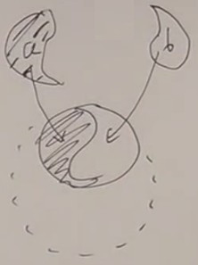
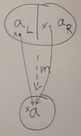
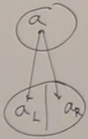

Coproduct
The coproduct is the dual of the product. The dual is the same thing but in the opposite category.So we build the product diagram reverting the arrows :  Instead of having projections
p and q, we have injections i and j.
So this is the pattern : we fix two objects
a and b. An object c will match this pattern if it has two arrows coming to it from a and b.
And to match which candidate is the best, we map the best match
c to fake candidates c'.
The existence of a unique morphism such as the diagram commutes permits to determine the best match.
Commuting condition is expressed by
i' = m o i
j' = m o j
j' = m o j
In terms of functions
What does coproduct mean in set theory ?The fact that we have thes injection means that we are embedding the sets
a and b into c.
Functions can shrink things, or not cover their whole codomain, they can be non injective or non surjective ; but we want
i and j to be the best fit. We want to embed exactly a and b into c, no more and no less. This is just like the union of a and b.

Every universal construction permits to build the best possible fit, it picks an ideal match.
But what happens when they overlap ? Or when a = b ?
The union of a set with itself is the set itself. But there is an other possibility : the discrimated union ; we tag the elements in the discrimated union : this element comes from the left one, this element comes from the right one ; the set is duplicated.
c is in fact a discrimated union because we can easily build a morphism m from discriminated union to union ; m is unique and non-injective.

And we could not go the other way round.

Each element x should be mapped twice, a function can't do that.
In terms of types
Called a tagged union or variant.In many programming languages you have a union ; if you take the union of Integer and boolean, you will have either an integer or a boolean, not both.
The simplest example is an enumeration, which is a union of things.
So the canonical way to build a product is a pair, built into the language.
A union, also called a sum type, is not usually built into the language but is easy to define.
The canonical definition of a sum type of two types is called
Either, taking in parameters two types a and b.
In Haskell,
data Either = Left a | Right b (Left a or Right b) ; Left and Right corresponds to injections p and q.
In C++ we would define a class with two constructors.
This is a dual picture ; in product we have the functions
fst and snd which can destroy the pair, extract and see what's inside a pair.
In coproduct we have functions which construct an Either. But can we extract stuff from an Either ?
If we have an
x :: Either Int Bool, to extract an Int, we need to write code that takes into account both possibilities, that will match either Right or Left ; this is called pattern matching ; Left and right are patterns.
The type system
Now that we have product type, sum type, unit type, void, we have pretty much of the foundations of the type system.Product types are the most visible ones, they may be built-in in Haskell or defined with generics in C++.
All these constructs in Haskell are equivalent to a product : they store two floats, no more and no less.
data Point = (Float, FLoat)
data Point = P Float Float
data Point{
x :: Float,
y :: Float
}
Why are these called products and sums ?
A product comes from cartesian product, so it's undersandable.
Coproduct is a union, which is a kind of sum of two sets.
This will be precised in the next course.